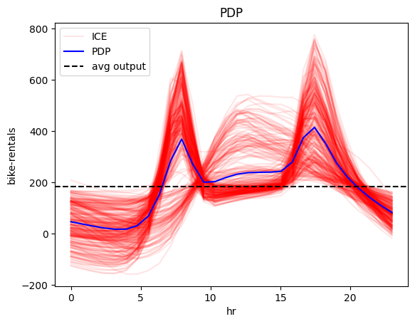
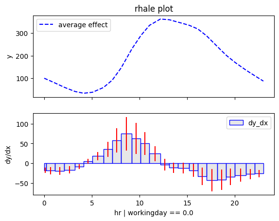
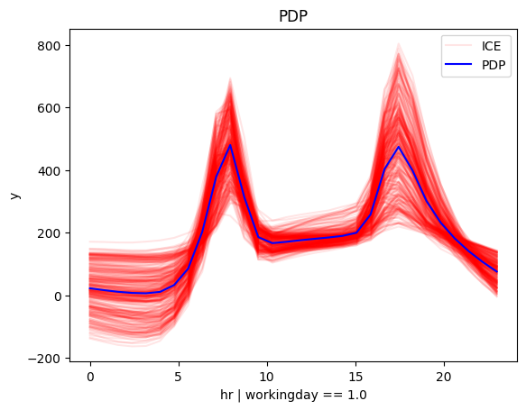
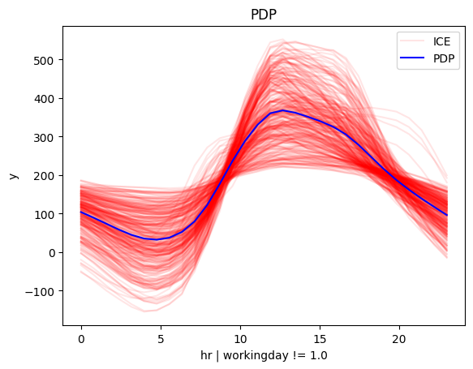

Bike-Sharing Dataset
The Bike-Sharing Dataset This dataset contains the hourly and daily count of rental bikes between years 2011 and 2012 in Capital bikeshare system with the corresponding weather and seasonal information. The dataset contains 14 features with information about the day-type, e.g., month, hour, which day of the week, whether it is working-day, and the weather conditions, e.g., temperature, humidity, wind speed, etc. The target variable is the number of bike rentals per hour. The dataset contains 17,379 instances.
import effector
import numpy as np
import pandas as pd
import tensorflow as tf
from tensorflow import keras
np.random.seed(42)
tf.random.set_seed(42)
2024-01-08 14:10:02.113432: I external/local_tsl/tsl/cuda/cudart_stub.cc:31] Could not find cuda drivers on your machine, GPU will not be used.
2024-01-08 14:10:02.145940: E external/local_xla/xla/stream_executor/cuda/cuda_dnn.cc:9261] Unable to register cuDNN factory: Attempting to register factory for plugin cuDNN when one has already been registered
2024-01-08 14:10:02.145962: E external/local_xla/xla/stream_executor/cuda/cuda_fft.cc:607] Unable to register cuFFT factory: Attempting to register factory for plugin cuFFT when one has already been registered
2024-01-08 14:10:02.146743: E external/local_xla/xla/stream_executor/cuda/cuda_blas.cc:1515] Unable to register cuBLAS factory: Attempting to register factory for plugin cuBLAS when one has already been registered
2024-01-08 14:10:02.151664: I external/local_tsl/tsl/cuda/cudart_stub.cc:31] Could not find cuda drivers on your machine, GPU will not be used.
2024-01-08 14:10:02.152237: I tensorflow/core/platform/cpu_feature_guard.cc:182] This TensorFlow binary is optimized to use available CPU instructions in performance-critical operations.
To enable the following instructions: AVX2 FMA, in other operations, rebuild TensorFlow with the appropriate compiler flags.
2024-01-08 14:10:02.907279: W tensorflow/compiler/tf2tensorrt/utils/py_utils.cc:38] TF-TRT Warning: Could not find TensorRT
Preprocess the data
# load dataset
df = pd.read_csv("./../data/Bike-Sharing-Dataset/hour.csv")
# drop columns
df = df.drop(["instant", "dteday", "casual", "registered", "atemp"], axis=1)
for col_name in df.columns:
print("Feature: {:15}, unique: {:4d}, Mean: {:6.2f}, Std: {:6.2f}, Min: {:6.2f}, Max: {:6.2f}".format(col_name, len(df[col_name].unique()), df[col_name].mean(), df[col_name].std(), df[col_name].min(), df[col_name].max()))
Feature: season , unique: 4, Mean: 2.50, Std: 1.11, Min: 1.00, Max: 4.00
Feature: yr , unique: 2, Mean: 0.50, Std: 0.50, Min: 0.00, Max: 1.00
Feature: mnth , unique: 12, Mean: 6.54, Std: 3.44, Min: 1.00, Max: 12.00
Feature: hr , unique: 24, Mean: 11.55, Std: 6.91, Min: 0.00, Max: 23.00
Feature: holiday , unique: 2, Mean: 0.03, Std: 0.17, Min: 0.00, Max: 1.00
Feature: weekday , unique: 7, Mean: 3.00, Std: 2.01, Min: 0.00, Max: 6.00
Feature: workingday , unique: 2, Mean: 0.68, Std: 0.47, Min: 0.00, Max: 1.00
Feature: weathersit , unique: 4, Mean: 1.43, Std: 0.64, Min: 1.00, Max: 4.00
Feature: temp , unique: 50, Mean: 0.50, Std: 0.19, Min: 0.02, Max: 1.00
Feature: hum , unique: 89, Mean: 0.63, Std: 0.19, Min: 0.00, Max: 1.00
Feature: windspeed , unique: 30, Mean: 0.19, Std: 0.12, Min: 0.00, Max: 0.85
Feature: cnt , unique: 869, Mean: 189.46, Std: 181.39, Min: 1.00, Max: 977.00
Feature analysis:
| Feature | Description | Value Range |
|---|---|---|
| season | season | 1: winter, 2: spring, 3: summer, 4: fall |
| yr | year | 0: 2011, 1: 2012 |
| mnth | month | 1 to 12 |
| hr | hour | 0 to 23 |
| holiday | whether the day is a holiday or not | 0: no, 1: yes |
| weekday | day of the week | 0: Sunday, 1: Monday, …, 6: Saturday |
| workingday | whether the day is a working day or not | 0: no, 1: yes |
| weathersit | weather situation | 1: clear, 2: mist, 3: light rain, 4: heavy rain |
| temp | temperature | values in [0.02, 1.00], with mean: 0.50 and std: 0.19 |
| hum | humidity | values in [0.00, 1.00], with mean: 0.63 and std: 0.19 |
| windspeed | wind speed | values in [0.00, 0.85], with mean: 0.19 and std: 0.12 |
Target variable:
| Target | Description | Value Range |
|---|---|---|
| cnt | bike rentals per hour | values in [1, 977] with mean: 189.46 and std: 181.39 |
def preprocess(df):
# Standarize X
X_df = df.drop(["cnt"], axis=1)
x_mean = X_df.mean()
x_std = X_df.std()
X_df = (X_df - X_df.mean()) / X_df.std()
# Standarize Y
Y_df = df["cnt"]
y_mean = Y_df.mean()
y_std = Y_df.std()
Y_df = (Y_df - Y_df.mean()) / Y_df.std()
return X_df, Y_df, x_mean, x_std, y_mean, y_std
# shuffle and standarize all features
X_df, Y_df, x_mean, x_std, y_mean, y_std = preprocess(df)
def split(X_df, Y_df):
# shuffle indices
indices = X_df.index.tolist()
np.random.shuffle(indices)
# data split
train_size = int(0.8 * len(X_df))
X_train = X_df.iloc[indices[:train_size]]
Y_train = Y_df.iloc[indices[:train_size]]
X_test = X_df.iloc[indices[train_size:]]
Y_test = Y_df.iloc[indices[train_size:]]
return X_train, Y_train, X_test, Y_test
# train/test split
X_train, Y_train, X_test, Y_test = split(X_df, Y_df)
Fit a Neural Network
# Train - Evaluate - Explain a neural network
model = keras.Sequential([
keras.layers.Dense(1024, activation="relu"),
keras.layers.Dense(512, activation="relu"),
keras.layers.Dense(256, activation="relu"),
keras.layers.Dense(1)
])
optimizer = keras.optimizers.Adam(learning_rate=0.001)
model.compile(optimizer=optimizer, loss="mse", metrics=["mae", keras.metrics.RootMeanSquaredError()])
model.fit(X_train, Y_train, batch_size=512, epochs=20, verbose=1)
model.evaluate(X_train, Y_train, verbose=1)
model.evaluate(X_test, Y_test, verbose=1)
Epoch 1/20
2024-01-08 14:10:03.542085: E external/local_xla/xla/stream_executor/cuda/cuda_driver.cc:274] failed call to cuInit: CUDA_ERROR_NO_DEVICE: no CUDA-capable device is detected
28/28 [==============================] - 1s 10ms/step - loss: 0.5126 - mae: 0.5196 - root_mean_squared_error: 0.7160
Epoch 2/20
28/28 [==============================] - 0s 11ms/step - loss: 0.3579 - mae: 0.4280 - root_mean_squared_error: 0.5982
Epoch 3/20
28/28 [==============================] - 0s 10ms/step - loss: 0.2762 - mae: 0.3698 - root_mean_squared_error: 0.5255
Epoch 4/20
28/28 [==============================] - 0s 10ms/step - loss: 0.2060 - mae: 0.3177 - root_mean_squared_error: 0.4539
Epoch 5/20
28/28 [==============================] - 0s 10ms/step - loss: 0.1465 - mae: 0.2640 - root_mean_squared_error: 0.3828
Epoch 6/20
28/28 [==============================] - 0s 10ms/step - loss: 0.1148 - mae: 0.2356 - root_mean_squared_error: 0.3388
Epoch 7/20
28/28 [==============================] - 0s 10ms/step - loss: 0.0887 - mae: 0.2062 - root_mean_squared_error: 0.2979
Epoch 8/20
28/28 [==============================] - 0s 10ms/step - loss: 0.0741 - mae: 0.1880 - root_mean_squared_error: 0.2722
Epoch 9/20
28/28 [==============================] - 0s 10ms/step - loss: 0.0606 - mae: 0.1685 - root_mean_squared_error: 0.2462
Epoch 10/20
28/28 [==============================] - 0s 10ms/step - loss: 0.0588 - mae: 0.1666 - root_mean_squared_error: 0.2424
Epoch 11/20
28/28 [==============================] - 0s 10ms/step - loss: 0.0609 - mae: 0.1710 - root_mean_squared_error: 0.2468
Epoch 12/20
28/28 [==============================] - 0s 10ms/step - loss: 0.0545 - mae: 0.1631 - root_mean_squared_error: 0.2334
Epoch 13/20
28/28 [==============================] - 0s 10ms/step - loss: 0.0509 - mae: 0.1568 - root_mean_squared_error: 0.2256
Epoch 14/20
28/28 [==============================] - 0s 10ms/step - loss: 0.0474 - mae: 0.1489 - root_mean_squared_error: 0.2177
Epoch 15/20
28/28 [==============================] - 0s 10ms/step - loss: 0.0451 - mae: 0.1428 - root_mean_squared_error: 0.2123
Epoch 16/20
28/28 [==============================] - 0s 10ms/step - loss: 0.0430 - mae: 0.1395 - root_mean_squared_error: 0.2073
Epoch 17/20
28/28 [==============================] - 0s 11ms/step - loss: 0.0462 - mae: 0.1489 - root_mean_squared_error: 0.2148
Epoch 18/20
28/28 [==============================] - 0s 10ms/step - loss: 0.0419 - mae: 0.1387 - root_mean_squared_error: 0.2047
Epoch 19/20
28/28 [==============================] - 0s 10ms/step - loss: 0.0414 - mae: 0.1395 - root_mean_squared_error: 0.2036
Epoch 20/20
28/28 [==============================] - 0s 11ms/step - loss: 0.0486 - mae: 0.1524 - root_mean_squared_error: 0.2205
435/435 [==============================] - 1s 1ms/step - loss: 0.0492 - mae: 0.1509 - root_mean_squared_error: 0.2218
109/109 [==============================] - 0s 957us/step - loss: 0.0688 - mae: 0.1743 - root_mean_squared_error: 0.2622
[0.06875330954790115, 0.17425496876239777, 0.2622085213661194]
We train a deep fully-connected Neural Network with 3 hidden layers for \(20\) epochs. The model achieves a root mean squared error on the test of about \(0.24\) units, that corresponds to approximately \(0.24 * 181 = 43\) counts.
Explain
We will focus on the feature temp (temperature) because its global effect is quite heterogeneous and the heterogeneity can be further explained using regional effects.
def model_jac(x):
x_tensor = tf.convert_to_tensor(x, dtype=tf.float32)
with tf.GradientTape() as t:
t.watch(x_tensor)
pred = model(x_tensor)
grads = t.gradient(pred, x_tensor)
return grads.numpy()
def model_forward(x):
return model(x).numpy().squeeze()
scale_x = {"mean": x_mean.iloc[3], "std": x_std.iloc[3]}
scale_y = {"mean": y_mean, "std": y_std}
scale_x_list =[{"mean": x_mean.iloc[i], "std": x_std.iloc[i]} for i in range(len(x_mean))]
feature_names = X_df.columns.to_list()
target_name = "bike-rentals"
Global Effect
We will first analyze the global effect of the feature hour on the target variable bike-rentals, using the PDP and RHALE methods.
PDP
pdp = effector.PDP(data=X_train.to_numpy(), model=model_forward, feature_names=feature_names, target_name=target_name, nof_instances="all")
pdp.plot(feature=3, centering=False, scale_x=scale_x, scale_y=scale_y, show_avg_output=True)
2024-01-08 14:10:10.948112: W external/local_tsl/tsl/framework/cpu_allocator_impl.cc:83] Allocation of 1708400640 exceeds 10% of free system memory.
2024-01-08 14:10:11.211370: W external/local_tsl/tsl/framework/cpu_allocator_impl.cc:83] Allocation of 1708400640 exceeds 10% of free system memory.
2024-01-08 14:10:11.428720: W external/local_tsl/tsl/framework/cpu_allocator_impl.cc:83] Allocation of 1708400640 exceeds 10% of free system memory.

pdp.plot(feature=3, heterogeneity="ice", centering=True, scale_x=scale_x, scale_y=scale_y, nof_ice=300, show_avg_output=True)
2024-01-08 14:10:13.477440: W external/local_tsl/tsl/framework/cpu_allocator_impl.cc:83] Allocation of 5694668800 exceeds 10% of free system memory.
2024-01-08 14:10:14.355351: W external/local_tsl/tsl/framework/cpu_allocator_impl.cc:83] Allocation of 5694668800 exceeds 10% of free system memory.

RHALE
rhale = effector.RHALE(data=X_train.to_numpy(), model=model_forward, model_jac=model_jac, feature_names=feature_names, target_name=target_name)
rhale.fit(features=3, binning_method=effector.binning_methods.Greedy(init_nof_bins=100, min_points_per_bin=100, discount=1., cat_limit=10))
rhale.plot(feature=3, centering=True, scale_x=scale_x, scale_y=scale_y, show_avg_output=True)
Degrees of freedom <= 0 for slice
invalid value encountered in divide
invalid value encountered in divide

rhale.plot(feature=3, heterogeneity="std", centering=True, scale_x=scale_x, scale_y=scale_y, show_avg_output=True)

Conclusion
The global effect of feature hour on the target variable bike-rentals shows two high peaks, one at around 8:00 and another at around 17:00, which probably corresponds to the morning and evening commute hours of the working days. However, the effect is quite heterogeneous. For this reason, we will analyze the regional effects which may explain the underlying heterogeneity.
Regional Effect
RegionalRHALE
# Regional RHALE
regional_rhale = effector.RegionalRHALE(
data=X_train.to_numpy(),
model=model_forward,
model_jac=model_jac,
cat_limit=10,
feature_names=feature_names,
nof_instances="all"
)
regional_rhale.fit(
features=3,
heter_small_enough=0.1,
heter_pcg_drop_thres=0.2,
binning_method=effector.binning_methods.Greedy(init_nof_bins=100, min_points_per_bin=100, discount=1., cat_limit=10),
max_depth=2,
nof_candidate_splits_for_numerical=10,
min_points_per_subregion=10,
candidate_conditioning_features="all",
split_categorical_features=True,
)
100%|██████████| 1/1 [00:16<00:00, 16.81s/it]
regional_rhale.show_partitioning(features=3, only_important=True, scale_x_list=scale_x_list)
Feature 3 - Full partition tree:
Node id: 0, name: hr, heter: 6.02 || nof_instances: 13903 || weight: 1.00
Node id: 1, name: hr | workingday == 0.0, heter: 2.33 || nof_instances: 4385 || weight: 0.32
Node id: 2, name: hr | workingday != 0.0, heter: 4.54 || nof_instances: 9518 || weight: 0.68
--------------------------------------------------
Feature 3 - Statistics per tree level:
Level 0, heter: 6.02
Level 1, heter: 3.84 || heter drop: 2.18 (36.19%)
regional_rhale.plot(feature=3, node_idx=1, heterogeneity=True, centering=True, scale_x_list=scale_x_list, scale_y=scale_y)
regional_rhale.plot(feature=3, node_idx=2, heterogeneity=True, centering=True, scale_x_list=scale_x_list, scale_y=scale_y)


RegionalPDP
regional_pdp = effector.RegionalPDP(
data=X_train.to_numpy(),
model=model_forward,
cat_limit=10,
feature_names=feature_names,
nof_instances="all"
)
regional_pdp.fit(
features=3,
heter_small_enough=0.1,
heter_pcg_drop_thres=0.1,
max_depth=2,
nof_candidate_splits_for_numerical=5,
min_points_per_subregion=10,
candidate_conditioning_features="all",
split_categorical_features=True,
nof_instances=1000
)
100%|██████████| 1/1 [00:15<00:00, 15.85s/it]
regional_pdp.show_partitioning(features=3, only_important=True, scale_x_list=scale_x_list)
Feature 3 - Full partition tree:
Node id: 0, name: hr, heter: 0.57 || nof_instances: 13903 || weight: 1.00
Node id: 1, name: hr | workingday == 1.0, heter: 0.43 || nof_instances: 9518 || weight: 0.68
Node id: 3, name: hr | workingday == 1.0 and season == 1.0, heter: 0.29 || nof_instances: 2245 || weight: 0.16
Node id: 4, name: hr | workingday == 1.0 and season != 1.0, heter: 0.38 || nof_instances: 7273 || weight: 0.52
Node id: 2, name: hr | workingday != 1.0, heter: 0.46 || nof_instances: 4385 || weight: 0.32
Node id: 5, name: hr | workingday != 1.0 and season == 1.0, heter: 0.27 || nof_instances: 1140 || weight: 0.08
Node id: 6, name: hr | workingday != 1.0 and season != 1.0, heter: 0.39 || nof_instances: 3245 || weight: 0.23
--------------------------------------------------
Feature 3 - Statistics per tree level:
Level 0, heter: 0.57
Level 1, heter: 0.44 || heter drop: 0.13 (22.76%)
Level 2, heter: 0.36 || heter drop: 0.08 (17.64%)
regional_pdp.plot(feature=3, node_idx=1, heterogeneity="ice", centering=True, scale_x_list=scale_x_list, scale_y=scale_y)

regional_pdp.plot(feature=3, node_idx=2, heterogeneity="ice", centering=True, scale_x_list=scale_x_list, scale_y=scale_y)

Conclusion
The both PDP and RHALE regional effect reveal two distinct explanations; one for the working days and another for the non-working days. For the working days, the effect is quite similar to the global effect (unfortunately, working ways dominate our life), with two high peaks at around 8:00 and 17:00. However, for the non-working days, the effect is quite different, with a single high peak at around 13:00 which probably corresponds to sightseeing and leisure activities.